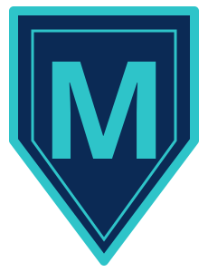

A plain-language guide to today's public demo of M.
Paper trading only, no real money, not financial advice.
This walkthrough is for people who want to try M on a computer they own. It uses only steps and requirements that are in the current public README or project files (the repo is still hodlmateo/m-lite until a gate-2 rename). Where the README is silent, the gap is marked see README (to confirm).
ollama program is on your PATH, or OLLAMA_HOST is set, the demo may use it to reorder notes and rephrase a cited sentence. A miss still stays a miss. --no-ollama skips the model.The public README does not start with a clone step. The first command below is the obvious way to copy the public repo. The install line after it is from the README.
git clone https://github.com/hodlmateo/m-lite.gitThen open the
m-lite folder you just copied. (Not listed in the README; obvious first step. The folder name matches today's public repo, which is still m-lite until a gate-2 rename.)pip install -e .This also makes the same program available as the
ask-m command.pip install -e ".[dev]" python -m pytest
From the project folder, the README's first demo command checks that the pieces work and prints PASS or FAIL:
python -m mlite prove
After the install step, the same program is also available as:
ask-m prove
Then try a question the sample notes can answer (this example is from the README):
python -m mlite "when do we water the fern"
To walk the paper desk on the bundled synthetic tape:
python -m mlite desk run
The desk prints a paper-trading warning first. It does not send an order.
This section follows the public file layout. Where the README does not spell out a swap procedure, the gap is marked.
ask reads markdown under data/notes/ and a SQLite seed in data/sample_notes.sql. Putting your own markdown notes in data/notes/ is the folder the program already uses. How to retire or replace the sample notes safely is see README (to confirm).python -m mlite gate stage --title "Your title" --body "Your note." python -m mlite gate list python -m mlite gate approve IDReplace
ID with the id shown by gate list. reject drops an item instead.var/ (gitignored). The code also allows an MLITE_WORKSPACE override so a demo can run without writing into the checkout. The exact file layout inside that workspace is see README (to confirm).data/registry.json. Each entry has an id, a one-line job, anti_jobs (work that bot must refuse), and hints. A threshold sits at the top of the file. Editing that file is the place the demo keeps this list. Whether the program reloads it on its own, and whether you should replace the sample bots or add to them, is see README (to confirm).Need help? Vanhorn SI can set it up for you.
Back to the sovereign-m overview · Public repo (still m-lite until a gate-2 rename)